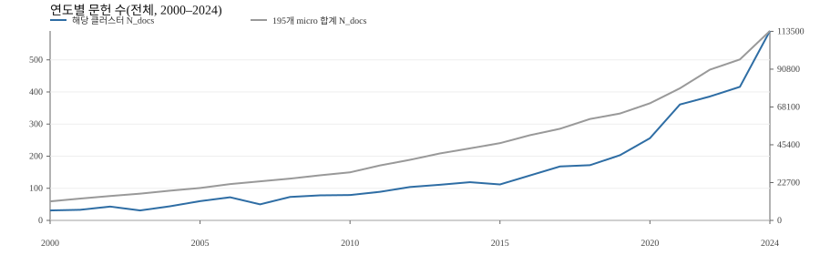

38-84 - 양자알고리즘·오류정정 (확장 가능)
1. 개요
유형: 확장 가능 — 핵심 역량과 인접하며 내부 지표 기준에서 일부 부족 축이 표시된 유형.
연관 그룹: 초전도양자컴퓨팅시스템연구단, 양자소자그룹
1-1. 클러스터 설명
이 클러스터의 핵심은 quantum algorithm을 이용해 현재의 quantum computer가 가진 제한된 성능 안에서도 계산 과제를 실행하고, 동시에 장치가 제대로 동작하는지 검증하는 것입니다. 지금의 양자 장치는 큐비트와 게이트가 충분히 많아도 잡음 때문에 긴 회로를 안정적으로 돌리기 어렵고, 결과가 맞는지 확인하는 것 자체도 고전 계산으로는 빠르게 커집니다.여기서 noisy intermediate-scale quantum(NISQ; noisy intermediate-scale quantum)의 약자이며, 오류정정이 충분하지 않은 상태에서 수십~수백 큐비트를 다루는 “근접기” 양자 장치를 뜻합니다.
이 기술은 먼저 입력으로 “실행하고 싶은 계산”을 정합니다. 예를 들어 무작위 회로에서 나온 출력 분포를 샘플링하거나, 어떤 해밀토니안을 따르는 시간 진화를 근사해 특정 물리량의 기댓값을 구하는 식입니다. 그다음 센서 역할을 하는 것은 장치 자체의 qubit과 gate입니다. qubit은 0과 1을 동시에 표현할 수 있는 정보 단위이고, gate는 qubit의 상태를 회전시키거나 두 qubit을 얽히게 만들어 회로를 구성하는 기본 연산입니다. 장치가 이 연산들을 수행하면 최종적으로 측정에서 고전적인 비트열이나 기댓값 같은 출력이 나오는데, 이 출력이 “의도한 계산”을 제대로 반영하는지를 평가하는 단계가 함께 따라붙습니다.
이때 중요한 아이디어가 두 갈래로 나뉩니다.하나는 변분 기반 알고리즘(예: VQE; variational quantum eigensolver, QAOA; quantum approximate optimization algorithm)처럼 짧은 회로를 반복 실행하면서 고전 최적화로 파라미터를 조정해 원하는 값을 찾는 방식입니다. 다른 하나는 오류정정으로 가는 경로를 명확히 하기 위해 code 기반의 논리 큐비트를 구성하고, 그 논리 큐비트의 오류율을 주기적으로 읽어가며 안정적인 논리 연산이 가능한지를 확인하는 방식입니다. 여기서 code는 여러 개의 물리 qubit에 정보를 분산 저장해 오류를 검출·정정하려는 규칙 체계이며, 표면코드 같은 2차원 배열 구조가 대표적으로 다뤄집니다.
또 하나의 축은 “장치 성능을 숫자로 비교할 수 있게 만드는 특성화 도구”입니다. 무작위 벤치마킹, 양자 볼륨, 게이트셋 토모그래피 같은 절차는 입력으로 특정한 회로 묶음이나 게이트 집합을 정해 반복 실행하고, 장치 반응으로 나타나는 성공 확률·오차·일관성의 패턴을 이용해, 최종적으로 게이트 오류율이나 시스템 수준의 실행 가능 규모 같은 지표를 계산합니다. 이런 지표가 있어야 같은 문제를 서로 다른 장치에서 돌렸을 때 결과를 공정하게 비교하고, 알고리즘이 실패했을 때 원인이 회로 설계인지 하드웨어 잡음인지 분리해볼 수 있습니다.
1-2. 측정 과학 관점 해석
이 클러스터를 측정 원리로 보면, 측정 대상은 “양자 게이트의 오류율, 잡음 특성, 그리고 오류정정이 적용된 논리 큐비트의 오류율”처럼 장치가 계산을 수행하는 능력 그 자체입니다. 장치의 qubit과 gate가 잡음의 영향을 받으면, 반복 실행에서 기대한 출력 분포가 달라지거나(예: 무작위 회로 샘플링에서 분포의 일치도가 낮아짐), 변분 알고리즘에서 추정하는 기댓값이 편향되거나, 오류정정 사이클에서는 신드롬 패턴이 더 자주 나타납니다. 이 변화는 반복 실험에서 얻는 출력 비트열 통계, 특정 회로의 성공 확률, 또는 토모그래피/벤치마킹 절차가 만들어내는 적합 파라미터로 읽어내며, 결국 “오류율”이나 “성능 지표”라는 수치 출력으로 정리됩니다.
성능지표는 왜 중요한지가 비교적 직관적입니다. 감도가 좋아야 약한 신호를 잡는 센서처럼, 여기서는 게이트 오류율을 작게 추정할 수 있어야 작은 개선도 구분할 수 있습니다. 또한 시스템 규모가 커질수록 회로 폭(사용 qubit 수)과 깊이(연산 단계)가 동시에 커지기 때문에, 단일 게이트의 평균 성능만이 아니라 장치 전체가 특정 구조의 회로를 끝까지 실행할 수 있는지를 나타내는 지표(예: 양자 볼륨)가 필요합니다. 오류정정 관점에서는 논리 오류율이 핵심인데, 이는 code로 묶인 물리 qubit 수를 늘렸을 때 논리 연산이 실제로 안정적인지 판단하는 직접적인 척도이기 때문입니다.
재현성과 비교 가능성은 특히 까다롭습니다. 같은 quantum computer라도 캘리브레이션 상태, 시간에 따른 드리프트, qubit 간 상호작용(크로스토크), 측정(readout) 오류, 그리고 회로가 하드웨어 연결 구조에 맞게 재배치되면서 추가되는 게이트 수 등이 달라지면 결과가 달라질 수 있습니다. 예를 들어 무작위 벤치마킹은 준비·측정 오류에 둔감하게 설계하는 대신, “평균적인” 오류를 요약하는 성격이 강해서 특정한 코히런트 오류나 상관 잡음이 지배적이면 알고리즘 성능과의 연결이 복잡해질 수 있습니다. 반대로 게이트셋 토모그래피는 게이트 집합을 더 자세히 복원하려 하지만, 분석 모델(가정한 잡음 형태)과 실험 조건이 맞지 않으면 해석이 어려워집니다. 따라서 측정 조건(타이밍·주파수·마이크로파 제어의 교정 수준, 극저온 환경에서의 계측 안정성, readout 특성)이 달라지면 같은 절차를 적용해도 “성능 지표”가 완전히 같은 의미를 갖기 어렵고, 이 간극을 줄이기 위해 절차서 표준화, 불확도 평가, 기준 데이터세트 같은 측정 인프라가 필요해집니다.
마지막으로, 근접기 알고리즘의 검증에서는 “고전 계산으로 완전 검증이 안 되는 영역”을 다루는 경우가 많아 시험 설계가 중요합니다. 일부 회로는 고전적으로 정확히 검증 가능한 형태를 섞어 두고, 그 구간에서 장치가 올바르게 동작하는지를 확인한 뒤 더 어려운 구간으로 확장하는 식으로 신뢰도를 쌓습니다. 이런 접근이 성립하려면, 어떤 회로가 검증 가능한지와 그 검증이 어떤 불확도를 갖는지까지 포함해 측정 프로토콜로 관리되어야 합니다.
2. 클러스터 세부지표
2-1. 전체 문헌 수 추이(연도별)

좌측 축은 해당 클러스터, 우측 축은 195개 micro 전체 합계의 연도별 문헌 수(N_docs)입니다(절대값 비교가 아니라 추세 비교 목적).
2000–2024 전체 기간의 연도별 문헌 수(UID 기준) 추이를 표시했습니다. 최근 5개년(2020–2024) 합계는 2,009편이며, 같은 기간 micro 전체 합계는 450,518편입니다. 참고로 2000–2024 기간 micro 전체 누적 합계는 1,099,738편이며, 2024년 micro 연도별 합계는 113,736편입니다.
2-2. 퍼센타일(요약)
아래 지표는 입력 데이터의 퍼센타일(0~100) 기준이며, 숫자가 클수록 상대적 위치가 높습니다. ’스코프 다양성(폭)’은 유망성 판단이 아니라 주제 범위/세분화 정도를 나타내는 보조 지표로 해석합니다.
| 지표 | 퍼센타일 | 수준 |
|---|---|---|
| 성장성 | 60.51 | 중간 수준 |
| 파급력 | 99.49 | 상위 10% (매우 우수) |
| 기술진보기여도 | 98.97 | 상위 10% (매우 우수) |
| 스코프 다양성(폭) | 13.85 | 하위 60% (보통 이하) |
| 종합(총점) | 100.00 | 상위 10% (매우 우수) |
2-3. KRISS 기여
RTA·논문수(N_docs)는 양적 활동도, Excellence10은 상위 10% 인용 논문 비중(%)으로 질적 성과를 나타냅니다. 단, Excellence10은 표본 수(N_docs)가 적을 때 변동성이 커 참고용으로 해석하는 것이 안전합니다.
| 항목 | 값 |
|---|---|
| KRISS RTA(최근 5개년) | 0.14 |
| KRISS Excellence10(최근 5개년, %) | 0.00* |
| KRISS 논문수(최근 5개년) | 1 |
* 최근 5개년 KRISS 논문 수(N_docs)가 5편 미만인 경우 Excellence10은 표본 수 영향이 커 참고용으로 해석하는 것이 안전합니다.
2-4. 간단 해석
기술진보기여도 퍼센타일이 상위 10% 수준으로 집계됩니다. 파급력 퍼센타일이 상위 10% 수준으로 집계됩니다.
3. 지식기반 인접 클러스터·키워드
3-1. 지식기반 인접 클러스터(EA/AA)
용어: ego는 현재 클러스터, alter는 유사도 기준으로 연결된 이웃 클러스터를 뜻합니다. 표의 구분은 EA(ego–alter) / AA(alter–alter)로 표기합니다.
확장 가능 유형 클러스터로, 핵심 역량 앵커는 20-124 - 광자 양자정보기술(1.00)로 확인됩니다. KRISS 최근 5개년 기준에서 핵심 역량 기준 3조건 중 부족한 축은 RTA·N_docs·Excellence10입니다.

| 구분 | 클러스터 | 유형 | 유사도 | 대표 키워드 |
|---|---|---|---|---|
| EA | 20-124 - 광자 양자정보기술 | 핵심 역량 | 1.00 | photon, entanglement, states, detector, qubit |
| EA | 25-109 - 페시바흐 페르미 초유체 | 확장 가능 | 0.99 | bcs-bec crossover, three-body, fermions, feshbach resonance, atom |
| EA | 20-103 - 양자광 메모리 | 확장 가능 | 0.99 | atom, electromagnetically induced transparency, photon, atomic, light |
| EA | 25-43 - 초저온 극성분자 | 확장 가능 | 0.98 | polar molecule, dipolar bose-einstein condensate, ultracold molecule, molecule, state |
| EA | 25-176 - 양자다체 비평형 동역학 | 확장 가능 | 0.98 | many-body localization, quantum many-body, many-body systems, out-of-time, matrix product state |
| EA | 25-48 - 보스응축체 비선형 여기 | 확장 가능 | 0.98 | bose-einstein condensate, soliton, state, solitons in, superfluid |
| EA | 20-71 - 양자 비국소성 검증 | 확장 가능 | 0.98 | inequality, device-independent, einstein-podolsky, bell inequality, entanglement |
| EA | 40-119 - 원자·이온 양자측정 | 확장 가능 | 0.98 | rydberg atom, atom, state, ion, rydberg |
| EA | 25-83 - 광격자 초저온 원자 | 확장 가능 | 0.96 | bose-hubbard model, one-dimensional, boson, fermion, hubbard model |
| EA | 20-156 - 광기계 양자측정 | 확장 가능 | 0.88 | optomechanical, resonator, mode, gyroscope, coupling |
| EA | 38-107 - 초전도 회로 양자전기역학 | 확장 가능 | 0.86 | superconductor, qubit, state, coupling, superconducting |
| EA | 20-76 - 광펌핑 자력계 | 확장 가능 | 0.85 | hertz, field, squid, magnetometer, measurement |
| EA | 25-123 - 위상광자·비에르미트상 | 확장 가능 | 0.83 | spin orbit coupling, boson, topological, photonics, fermions |
| AA | 20-32 - 양자점 단일광자원 | 확장 가능 | 0.56 | quantum dots, inas, photon, emission, state |
| AA | 30-169 - 위상 양자물질 전자구조 측정 | 역량 공백 | 0.46 | weyl semimetal, topological insulator, superconductor, fermions, bi2se3 |
| AA | 3-73 - 나노힘·마찰 정량측정 | 역량 공백 | 0.46 | atomic force microscopy, contact, mode, cantilever, piezoelectric |
| AA | 39-85 - 철계 초전도체 물성 | unknown | 0.45 | superconductor, superconducting, iron, superconductivity, doping |
| AA | 39-132 - MgB2 초전도 특성 | unknown | 0.44 | mgb2, superconductor, superconducting, critical current, doping |
| AA | 39-150 - REBCO 나노핀닝 | unknown | 0.44 | high temperature superconductor, bi sr, superconductor, copper, maglev |
| AA | 14-126 - 키타예프 스핀액체 계측 | unknown | 0.42 | temperature, field, phase, interaction, antiferromagnetic |
3-2. 워드클라우드

생성 방식: 클러스터 전체 초록에서 stopword를 제거하고, 단어·bi-gram 빈도를 계산했습니다(상위 3200개). 여기에 입력 키워드 빈도 정보를 alpha=0.5로 가중 결합해(스케일 정규화 후) 표현했습니다.
3-3. 키워드 시계열(비율, 2015–2024)

비율(%) = (해당 연도·클러스터에서 키워드가 포함된 문서 수 / 같은 연도·클러스터 전체 문서 수) × 100 위 heatmap은 상위 키워드의 비율(%)을 키워드별 0~1 정규화(최대값=1)해 상대 변화를 보여줍니다.
3-4. 주요 키워드(기간별 비율·문서수)
기간은 2015–2024를 기준으로 하며, 초기(2015–2017), 중기(2018–2021), 후기(2022–2024)로 3구간 요약합니다.
표의 각 셀은 비율% (문서수) 형식이며, 괄호 안 숫자는 해당 기간에 키워드가 포함된 문서 수(중복 제거)입니다(동일 문서 내 다중 등장은 1회로 계산).
score는 클러스터 내 용어의 대표성을 나타내는 점수로, c‑TF‑IDF와 LLR을 z‑score 후 가중합해 계산합니다. 자세한 산출 방식은 분야별 상세 리포팅(본 보고서)을 참고해 주십시오.
| term | score | 10년 합계(2015–2024) | 초기(2015–2017) | 중기(2018–2021) | 후기(2022–2024) |
|---|---|---|---|---|---|
| quantum computer | 1.66 | 17.94% (503) | 4.76% (20) | 18.15% (180) | 21.77% (303) |
| quantum algorithm | 1.60 | 13.66% (383) | 5.00% (21) | 12.00% (119) | 17.46% (243) |
| qubit | 0.03 | 43.30% (1,214) | 35.95% (151) | 44.46% (441) | 44.68% (622) |
| gate | 0.01 | 28.21% (791) | 25.24% (106) | 28.53% (283) | 28.88% (402) |
| states | 0.01 | 28.42% (797) | 21.67% (91) | 26.31% (261) | 31.97% (445) |
| hamiltonian | 0.01 | 18.01% (505) | 16.90% (71) | 16.33% (162) | 19.54% (272) |
| code | 0.01 | 15.66% (439) | 15.71% (66) | 14.82% (147) | 16.24% (226) |
| classical | 0.01 | 30.49% (855) | 21.19% (89) | 31.65% (314) | 32.47% (452) |
| clifford | 0.01 | 6.63% (186) | 8.57% (36) | 6.65% (66) | 6.03% (84) |
| nisq | 0.01 | 18.76% (526) | 0.24% (1) | 20.46% (203) | 23.13% (322) |
| entanglement | 0.01 | 8.38% (235) | 4.52% (19) | 7.76% (77) | 9.99% (139) |
| noise | 0.00 | 19.37% (543) | 11.67% (49) | 19.05% (189) | 21.91% (305) |
| fault tolerant | 0.00 | 10.52% (295) | 10.00% (42) | 10.79% (107) | 10.49% (146) |
| unitary | 0.00 | 10.73% (301) | 12.38% (52) | 8.37% (83) | 11.93% (166) |
| lattice gauge | 0.00 | 3.82% (107) | 3.81% (16) | 2.62% (26) | 4.67% (65) |
4. 기관 분석(2020–2024)
4-1. 10개 기관 성과 지표
최근 5개년(2020–2024) 기준으로 10개 기관의 논문 수(N_docs), RTA, Excellence10(상위 10% 인용 논문 비중×100)을 정리했습니다. N_docs·RTA는 양적 활동도, Excellence10은 질적 성과를 나타내며, 표본 수(N_docs)가 적을 때 Excellence10은 변동성이 커 참고용으로 해석하는 것이 안전합니다.
| 기관 | N_docs | RTA | Excellence10(%) |
|---|---|---|---|
| NIST | 69 | 2.63 | 35.46 |
| NPL | 9 | 1.54 | 33.33 |
| KRISS | 1 | 0.14 | 0.00* |
| NRC | 1 | 0.28 | 0.00* |
| PTB | 1 | 0.14 | 100.00* |
| BAM | 0 | 0.00 | |
| INRIM | 0 | 0.00 | |
| NIM | 0 | 0.00 | |
| NMIJ/AIST | 0 | 0.00 | |
| NPLI | 0 | 0.00 |
* N_docs < 5인 경우 Excellence10은 표본 수 영향이 커 참고용으로 해석하는 것이 안전합니다.
요약: KRISS의 최근 5개년 논문 수는 1편이며, 비교기관 중 최대치는 69편입니다. KRISS RTA는 0.14이며, 비교기관 중 최대치는 2.63입니다. KRISS Excellence10은 0.00%이며, 비교기관 중 최대치는 100.00%입니다. KRISS 표본 수(N_docs)가 적어 Excellence10 해석은 참고용입니다.
4-2. 상위 기관(문헌 수 기준, 2020–2024)
전체(Top500 + BIPM) Top5
| 순위 | 기관 | N_docs |
|---|---|---|
| 1 | California Institute of Technology | 111 |
| 2 | University of Maryland College Park | 108 |
| 3 | International Business Machines (IBM) | 86 |
| 4 | Massachusetts Institute of Technology (MIT) | 80 |
| 5 | Chinese Academy of Sciences | 78 |
BIPM 한정 Top5
| 순위 | 기관 | N_docs |
|---|---|---|
| 1 | National Institute of Standards and Technology [NIST] | 69 |
| 2 | National Physical Laboratory [NPL] | 9 |
| 3 | Instituto Nacional de Metrologia, Qualidade e Tecnologia [INMETRO] | 1 |
| 4 | Korea Research Institute of Standards and Science [KRISS] | 1 |
| 5 | National Research Council Canada [NRC] | 1 |
4-3. 기관별 초록 기반 요약(2020–2024)
대상 기관 선정 기준: 최근 5개년(2020–2024) 기준으로 RTA > 0.8 및 문헌 수 > 5인 기관을 포함하고, KRISS는 항상 포함했습니다.
NIST: 재구성 가능한 중성원자 배열을 기반으로 한 논리 큐비트 수준의 오류정정 양자처리기에 집중하고 있습니다 (RTA 2.63, 문헌 69건). 최대 280개 물리 큐비트를 사용해 인코딩된 논리 큐비트로 동작하는 프로그래머블 양자 프로세서를 구현했으며, 구역화 구조와 논리-레벨 제어로 임의 연결성, 단일 큐비트 회전, 중간-회로 판독을 함께 운용합니다. 표면 코드 거리를 d=3에서 d=7로 확장해 2-큐비트 논리 게이트 성능을 개선하고, 손익분기 수준의 컬러-코드 큐비트 준비와 오류허용 논리 GHZ 상태 생성 및 피드포워드 얽힘 텔레포테이션을 시연했습니다 (총 인용수: 1248).
NPL: 변분 양자 알고리즘의 잡음 한계와 최적화 가능성을 이론·시뮬레이션·구현 관점에서 정교화하는 연구에 집중하고 있습니다 (RTA 1.54, 문헌 9건). 로컬 파울리 잡음이 존재할 때 회로 깊이가 큐비트 수에 선형으로 증가하면 그래디언트가 지수적으로 소실되어 학습이 어려워지는 잡음 유발 배런 플래토를 엄밀히 제시했습니다. 변분 양자 고유값 해법에서 잡음 환경의 에너지뿐 아니라 충실도와 컨커런스를 함께 평가하고, 중복 파라미터화 게이트가 잡음에 대한 회복력을 높이는 조건과 잡음이 파라미터 퇴화를 해제하는 양상을 분석했습니다. 또한 4-준위 초전도 트랜스몬 큐디트로 2-큐비트를 에뮬레이션해 판독 오분류와 진폭 감쇠를 주요 오류로 모델링하고, 오류 완화로 예측 에너지를 화학적 정확도 범위로 맞췄습니다 (총 인용수: 384).
KRISS: 단일-샷 측정을 활용한 양자상태 학습 알고리즘 개발에 집중하고 있습니다 (RTA 0.14, 문헌 1건). 입력된 초록 수가 제한적이어서 일반화에는 주의가 필요하지만, 단일-샷 측정 기반 학습 규칙에 가중 무작위성을 도입해 다양한 학습 경로를 탐색하면서 이론적 최적 정확도를 달성하는 방법을 제시했습니다. 선형 광학 실험으로 큐비트 상태 학습·재현을 검증했고, 미지 상태 복사본 수 N에 대해 (거의) 최적 불충실도 스케일링 O(N^-0.983)을 보이며 10^-5 미만까지 정확도를 낮췄습니다 (총 인용수: 3).
5. 정책부합성(분포)
정책부합성은 문헌(제목+초록) 기반 분류 결과의 분포를 요약한 것으로, 본 간이 리포트에서는 ’비율/건수’만을 제시합니다(인과·정당화 단정 금지).
5-1. 분포(비율%/건수)
| 정책 카테고리 | 비율(%) | 건수(편) |
|---|---|---|
| 기후·환경 정책 지원 측정 과학 | 0 | |
| 보건·보건안보 정책 지원 측정 과학 | 0 | |
| 식품·물·소비자 안전 정책 지원 측정 과학 | 0 | |
| 에너지 전환·에너지안보 정책 지원 측정 과학 | 0 | |
| 산업혁신·첨단제조 정책 지원 측정 과학 | 0 | |
| 미분류 | 81 | |
| 합계 | 0 | |
| 기준 문헌 수 | 81 |
5-2. 정책부합성 해석
본문: 이번 클러스터는 정책 카테고리(5개)로 분류된 문헌이 0건이고, 미분류가 81건(기준 문헌 수 81편)으로 집계되어 정책 축 분포 해석은 보류합니다. 상세 리포팅 단계에서는 분류 기준(라벨 세트·임계값·복수 라벨 처리)과 표본 범위를 먼저 점검하는 것이 안전합니다.
5-3. 분류 근거 예시
형식: 연도 · 정책 분야 · 측정 축 · 제목 — 초록 발췌 (제목은 굵게, 발췌문은 이탤릭).
분류 근거 예시가 제공되지 않아, 본 절은 생략합니다.
관련도 해석 메모: 특정 카테고리의 비율/건수가 높다는 것은 해당 축으로 분류된 문헌이 상대적으로 많음을 의미합니다. 다만 분류 기준·모호성·복수 라벨 여부에 따라 분포가 달라질 수 있어, 상세 리포팅에서는 클러스터 스코프(기술/응용)와 함께 교차 검토하는 것이 안전합니다.
6. 요약
본 클러스터(“양자알고리즘·오류정정”)는 quantum algorithm을 통해 오류정정이 충분하지 않은 nisq 단계의 quantum computer에서도 계산 과제를 실행하고, 장치가 의도한 계산을 제대로 반영하는지까지 함께 검증하려는 연구를 묶습니다. 장치의 qubit과 gate가 만들어내는 출력 비트열 통계, 성공 확률, 토모그래피·벤치마킹 절차의 적합 결과를 바탕으로 게이트 오류율과 시스템 수준 성능 지표를 산출하며, code 기반 논리 큐비트의 오류율을 추적해 결함허용으로의 이행 경로도 다룹니다. 지표로는 성장성 60.51, 파급력 99.49, 기술진보기여도 98.97, 스코프 다양성(폭) 13.85, 종합 100.00으로 집계되며, 문헌 수는 최근 5개년 합계 2,009건이고 2024년 590건으로 증가한 흐름이 확인됩니다.
2020–2024년 10개 기관 비교에서 KRISS는 문헌 수 1건, RTA 0.14, Excellence10 0.00으로 집계되며, 같은 기간 NIST는 69건·RTA 2.63·Excellence10 35.46, NPL은 9건·RTA 1.54·Excellence10 33.33으로 나타나 KRISS의 상대적 산출 규모와 RTA 수준이 함께 낮게 관측됩니다. 또한 KRISS는 NRC(1건, RTA 0.28) 및 PTB(1건, RTA 0.14)와 비교하면 문헌 수는 동일하나 RTA가 NRC보다 낮고 PTB와는 동일하며, Excellence10은 KRISS 0.00과 PTB 100.00처럼 값 차이가 큰 사례가 있어 문헌 수(1건)에 민감한 참고 지표로 해석될 여지가 있습니다. 협력 네트워크에서는 KRISS의 연결 수 25, 가중 연결 강도 165.00(전체 51개 기관 중 34위)로 집계되고, BIPM 한정(2020–2024)에서는 연결 수 22, 가중 연결 강도 합 108.00으로 정리됩니다.
정책부합성 분류에서는 분류된 문헌 수가 0건이며, 기준 문헌 수는 81건으로 집계되어 최상위 카테고리가 도출되지 않은 상태로 관측됩니다. 따라서 현 단계에서는 특정 정책 범주와의 연결을 분포 근거로 설명하기 어렵고, 분류 기준과 적용 범위에 대한 추가 확인이 필요합니다. 또한 본 클러스터는 KRISS의 핵심 역량과 유사도 0.996인 “20-124 - 광자 양자정보기술”에 인접한 확장 가능 유형으로 제시되지만, 최근 5개년 기준에서 RTA 0.14(기준 1.00), 문헌 수 1건(기준 5건), Excellence10 0.00(기준 8.00)으로 부족 축이 함께 표시됩니다. 검토 포인트로는 2020–2024년 문헌 수 1건에 따른 지표 변동 가능성을 감안해 비교 해석의 범위를 정리할 수 있습니다. 분류된 문헌 수 0건(기준 81건)의 원인을 데이터 적용 조건 관점에서 점검하고, 이후 정책부합성 해석의 전제를 재구성할 수 있습니다.
부록. 데이터 커버리지·주의
- 최근 5개년 KRISS 논문 수가 1편으로 작아, 비율/퍼센타일 해석은 보수적으로 보는 것이 안전합니다.
- 키워드 추이는 ‘문서 포함 비율(%)’ 지표이며, 논문 수 증가/감소로 단정하지 않습니다.
- 정책부합성은 문헌(제목+초록) 기반 분류 결과의 분포이며, 인과/정당화로 해석하지 않습니다.
- 10개 기관 성과 지표(4-1, 2020–2024)는 선택된 10개 기관에 한정된 비교입니다(모든 기관 전체 비교 아님).
부록. 약어
보고서 본문에 등장한 약어와 영문 전체 명칭을 정리했습니다(첫 등장에만 영문 전체 명칭을 포함하고, 이후는 약어만 사용).
| 약어 | 영문 전체 명칭 |
|---|---|
| NISQ | noisy intermediate-scale quantum |
| QAOA | quantum approximate optimization algorithm |
| RTA | revealed technological advantage |
| VQE | variational quantum eigensolver |